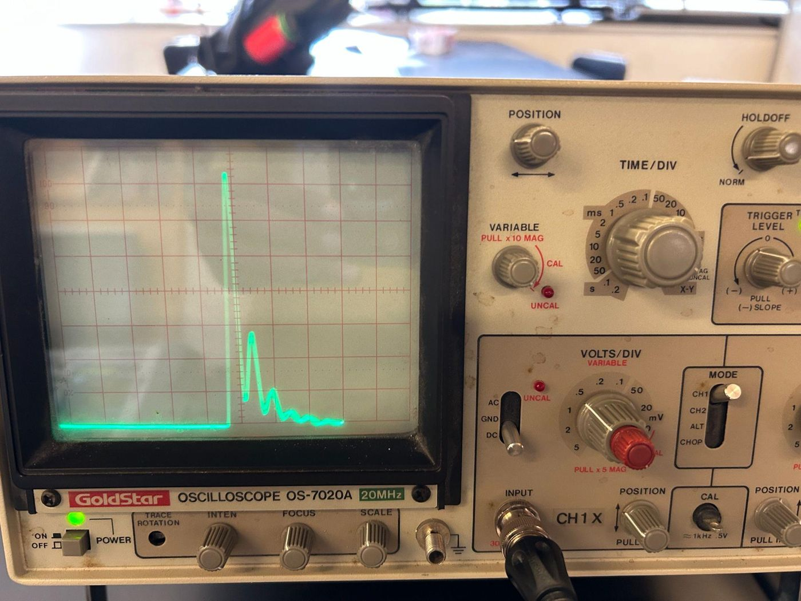

| Transmitter | XR2206 function generator kit, modulated through its AMSI pin |
|---|---|
| Receiver | Hand-wound coil, adjustable capacitor, 1N34 diode, LM386 amplifier |
| Tuning | f = 1 / (2π√LC) |
| Test gear | Oscilloscope, two function generators, multimeter, capacitance meter |
| When | 2025, team of three |
Three of us built both halves of an AM link. The transmitter started from an XR2206 function generator kit. We traced a dead output on the scope to bad solder joints, then fed a second function generator into the AMSI pin to modulate the amplitude. Tuned to an open frequency, it came through on a regular AM radio.
The receiver only works if its LC circuit hits the right frequency, so we needed the coil's inductance. We found it two ways: from the coil's dimensions and number of turns, and from an LR decay on the scope. For the second, we drove the coil with a square wave, read the time constant at 37% of the peak, and solved L = τR. The two values agreed.
